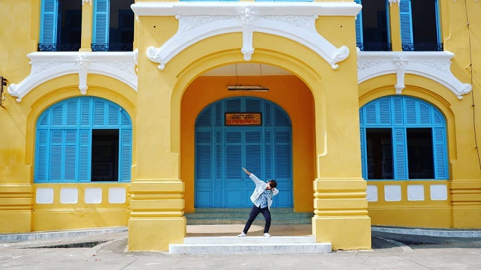
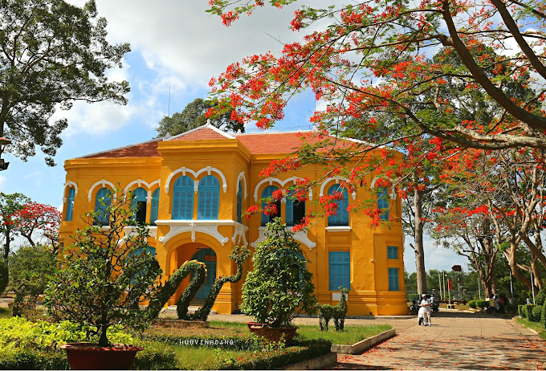

Bảo tàng Bến Tre đem đến những trải nghiệm đặc sắc như thế nào? Đừng ngần ngại mà hãy đồng hành cùng Luhanhvietnam trong chuyến du lịch Bến Tre của bạn! Với sự đa dạng về lịch sử và những hiện vật nổi bật, điểm đến này hứa hẹn sẽ đưa bạn khám phá sâu hơn về vùng đất và con người của nơi này.
Bảo tàng Bến Tre nổi tiếng với vai trò giữ gìn và trưng bày các hiện vật, tranh ảnh về lịch sử tự nhiên và xã hội, phục vụ cho nhu cầu nghiên cứu, giáo dục, tham quan và tận hưởng văn hóa. Do đó, khi khám phá một vùng đất mới, các du khách thường chọn nơi này làm điểm đến đầu tiên. Bảo tàng Bến Tre không chỉ là một trong những điểm tham quan quan trọng, mà còn là biểu tượng của vẻ đẹp văn hóa - lịch sử đặc sắc của miền quê sông nước. Cùng với các điểm tham quan như Di tích Cây Da đôi, Làng nghề bánh tráng Mỹ Lồng, Đền thờ Trung tướng Đồng Văn Cống,... đây là những địa điểm không thể bỏ qua trong chuyến du lịch thú vị của bạn.
Bảo tàng Bến Tre nằm bên bờ sông Bến Tre hiền hòa, tại số 146 đường Hùng Vương, P. 3, TP. Bến Tre. Mặt chính của bảo tàng hướng về phía sông Bến Tre với khuôn viên rộng lớn có nhiều cây xanh tạo bóng mát và hoa kiểng sắc nét, tạo nên một không gian thơ mộng và dễ chịu. Mặt sau của bảo tàng hướng về đường Cách mạng tháng Tám, một trong những con đường sầm uất nhất của thành phố. Vị trí này thuận tiện cho việc di chuyển và thu hút du khách đến thăm quan.
Bảo tàng Bến Tre tọa lạc trên con đường Hùng Vương, một trong những con đường sầm uất nhất của thành phố, với mặt chính hướng ra sông và phía sau giáp đường Cách Mạng Tháng 8. Nơi đây được bao quanh bởi khuôn viên xanh mát với nhiều cây cổ thụ và hoa kiểng tươi tốt và được bảo vệ bởi dãy hàng rào khang trang.
Ngoài việc sở hữu vị trí đẹp và thuận lợi, cung đường đến Bảo tàng Bến Tre cũng rất dễ dàng. Từ trung tâm thành phố, bạn chỉ cần đi hết đường 30 Tháng 4 rồi rẽ phải vào Hùng Vương. Điểm đến của bạn sẽ nằm ở số 146, cách Bến tàu Hùng Vương chưa đến 200m. Nếu đây là lần đầu bạn đến thăm, sau khi đến trung tâm thành phố, bạn có thể sử dụng dịch vụ bus hoặc taxi Bến Tre để đến trực tiếp bảo tàng và tránh bị lạc. Xe máy, ô tô tự lái hoặc phương tiện cá nhân khác sẽ là lựa chọn lý tưởng hơn cho những du khách đã có kinh nghiệm khám phá xứ dừa.
Địa chỉ: Số 146, Đ Hùng Vương, P. An Hội, Bến Tre.
Giờ mở cửa: 7h00 - 17h00 các ngày trong tuần.
Giá vé:
- Người lớn: 50.000 VNĐ/khách.
- Trẻ em cao trên 1m2: 20.000 VNĐ/khác.h
- Trẻ em cao dưới 1m2: Miễn phí.
Bảo tàng Bến Tre được thành lập vào năm 1981 với diện tích lên đến 20.000m2. Ban đầu, địa điểm này được xây dựng như là Dinh Tham biện, nhờ vị trí lân cận với 3 con đường lớn và thuận lợi: Hùng Vương, Lê Đại Hành và Cách Mạng Tháng 8. Sau khi Hiệp định Geneva được ký kết vào ngày 20/7/1954, chế độ độc tài của Ngô Đình Diệm được thiết lập ở miền Nam Việt Nam, biến ngôi nhà này thành Dinh Tỉnh trưởng.
Khi miền Nam giải phóng hoàn toàn và đất nước được thống nhất, bảo tàng đã được Tỉnh ủy Bến Tre tiếp quản và chính thức giao cho Bộ Văn hóa Thông tin ( hiện nay gọi là Sở Văn hóa, Thể thao và Du lịch) để xây dựng và bảo tồn. Vào ngày 26/10/1981, theo quyết định số 1564 của chính quyền, công trình được giao lại cho dự án bảo tàng để bảo quản và trưng bày các hình ảnh và hiện vật còn lại từ 2 cuộc kháng chiến chống thực dân Pháp và đế quốc Mỹ xâm lược.
Quá trình hình thành và phát triển của bảo tàng liên quan chặt chẽ đến những sự kiện lịch sử quan trọng của người dân Bến Tre. Nó là nơi in ấn tài liệu bí mật nội tuyến vào năm 1938, dưới sự chỉ đạo của Bí thư Tỉnh ủy Phạm Thái Bường và là địa điểm diễn ra lễ ký quyết định thành lập công binh giới của lãnh đạo Tỉnh ủy vào tháng 10/1945. Ngoài ra, bảo tàng còn là nơi hoạt động của chiến sĩ tình báo Phạm Ngọc Thảo với vai trò Đại tá Tỉnh trưởng Kiến Hòa trong giai đoạn từ 1960 đến 1962.
Khi thăm bảo tàng Bến Tre, bạn sẽ được khám phá và tìm hiểu về nhiều điểm quan trọng trong quần thể này như Di tích quốc gia "Nơi ở và hoạt động của vị Đại tá Phạm Ngọc Thảo", Nhà dừa, Nhà trưng bày Thành tựu Kinh tế - Xã hội của tỉnh và Khu trưng bày ngoài trời. Mỗi phần của Bảo tàng mang đến những thông tin lịch sử và văn hóa đặc biệt khác nhau.
Di tích quốc gia "Nơi ở và hoạt động của vị Đại tá Phạm Ngọc Thảo" được xây dựng theo kiến trúc Pháp, mang đậm vẻ trang nghiêm và cổ kính. Đây là nơi trưng bày những hình ảnh và hiện vật kể về lịch sử và truyền thống cách mạng của dân Bến Tre trong hai cuộc kháng chiến chống Pháp và Mỹ. Tại đây, bạn cũng có thể tìm hiểu về cuộc đời và công việc của Đại tá Phạm Ngọc Thảo.
Nhà trưng bày Thành tựu Kinh tế - Xã hội của tỉnh sẽ giúp bạn hiểu rõ hơn về quá trình phát triển của Bến Tre từ năm 1976 đến nay, qua những hiện vật và hình ảnh minh họa về kinh tế, văn hóa, và xã hội của tỉnh
Nhà dừa với thiết kế nhẹ nhàng, đậm chất dân tộc sẽ mang đến cho bạn trải nghiệm gần gũi hơn về đời sống văn hóa và sinh hoạt của người dân Bến Tre.
Khu trưng bày ngoài trời bao gồm nhiều hiện vật lớn như xác máy bay, pháo, vỏ bom thu thập trong chiến tranh, kèm theo các tiểu cảnh như ruộng lúa, con trâu, hồ sen, cầu dừa... Tất cả này tạo ra một không gian gần gũi và thân thiện, cũng như là nơi lý tưởng để chụp ảnh với những background đầy ấn tượng.
Bảo tàng Bến Tre là một điểm đến du lịch đặc biệt mà bạn không nên bỏ lỡ khi khám phá vùng đất miền Tây sông nước này. Hãy ghi lại thông tin của nơi này vào sổ tay du lịch của bạn để tham khảo khi cần.